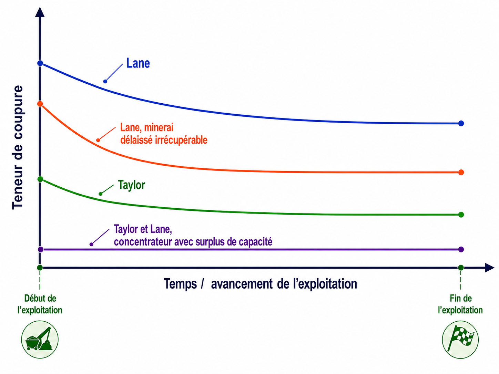
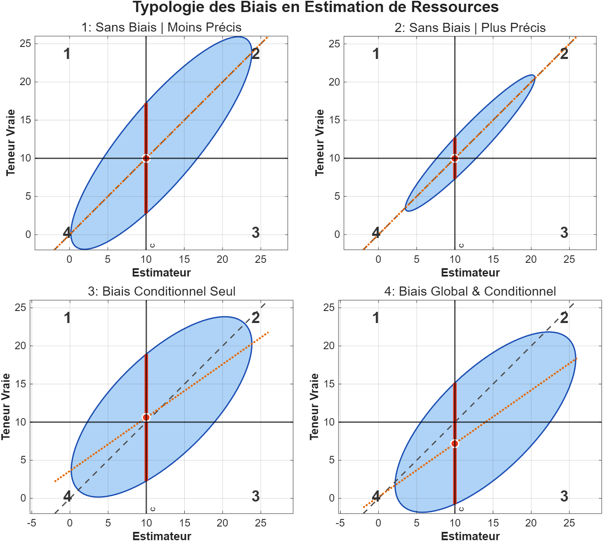

2 Aspect économique
Ce chapitre porte sur la notion de teneur de coupure, un élément central de l’évaluation économique d’un projet minier. La théorie de Lane permet de déterminer une teneur de coupure en fonction des coûts d’exploitation, du prix du métal, de la récupération métallurgique et des contraintes de capacité propres à l’opération minière. Les principales formes de teneur de coupure utilisées en planification minière sont ensuite présentées, notamment les teneurs de coupure limites, les teneurs de coupure d’équilibre et la teneur de coupure optimale. Des ateliers interactifs permettent enfin d’évaluer l’effet des paramètres économiques et opérationnels sur la rentabilité du projet. Ce chapitre suppose qu’un modèle de blocs de ressources et de réserves minières est déjà disponible. La construction de ce modèle sera abordée plus loin dans le livre.
À la fin de ce chapitre, vous serez en mesure de :
Expliquer le rôle de la teneur de coupure dans la décision d’exploiter, de traiter ou de rejeter un bloc;
Distinguer les teneurs de coupure limite, d’équilibre et optimale;
Calculer les teneurs limite et d’équilibre à partir des paramètres économiques et opérationnels d’un projet minier.
Déterminer la teneur de coupure optimale en comparant les contraintes liées à la mine, au concentrateur et au marché;
Analyser l’effet de paramètres comme le prix du métal, les coûts d’extraction, les coûts de traitement, la récupération métallurgique et les capacités de production sur la rentabilité d’un projet;
Expliquer pourquoi l’absence de biais conditionnel est nécessaire pour appliquer correctement la théorie de Lane à un modèle de blocs.
Ce chapitre s’appuie principalement sur le livre suivant :
Lane, K. F. (2016). The economic definition of ore: Cut-Off Grades in Theory and Practice.
2.1 Rentabilité économique d’un projet minier
Pour rappel, une ressource minérale est une concentration de substances minérales présentant des perspectives d’extraction économique raisonnables. Une réserve minérale correspond à la portion économiquement exploitable d’une ressource mesurée ou indiquée, après application des facteurs modificateurs pertinents, notamment les conditions minières, métallurgiques, économiques, environnementales, juridiques et sociales.
La teneur de coupure est l’un des paramètres utilisés dans cette évaluation. Elle correspond à la teneur minimale à partir de laquelle un matériau peut être considéré comme économiquement valorisable selon un ensemble d’hypothèses donné, telles que le prix du métal, les coûts d’extraction et de traitement, la récupération métallurgique et les contraintes d’exploitation.
Dans un modèle de blocs, la teneur de coupure permet de distinguer les blocs destinés au traitement de ceux classés comme stériles ou matériaux pouvant être stockés pour un traitement ultérieur. Son application influence directement le tonnage retenu, la teneur moyenne du matériau traité et la quantité de métal récupérable. Cette classification ne repose toutefois pas uniquement sur la teneur : la localisation du bloc, les contraintes géométriques, la dilution, les pertes minières, les capacités de traitement et les séquences d’exploitation doivent également être prises en compte.
La teneur de coupure dépend de plusieurs facteurs : la teneur en métal, le prix du métal, les coûts d’extraction et de traitement, la récupération métallurgique, les capacités de production et les contraintes opérationnelles. Dans certains gisements plus complexes, d’autres paramètres peuvent également être pris en compte, mais nous nous limiterons ici à ces principaux éléments.
La teneur de coupure fait donc le lien entre ce que contient le gisement et ce qu’il est réellement possible d’exploiter de manière rentable.
Cette notion est centrale, car un mauvais choix de la teneur de coupure peut réduire la valeur d’un projet. Une teneur trop basse peut mener au traitement de matériel peu rentable et saturer inutilement le concentrateur. Une teneur trop élevée peut, au contraire, laisser de côté du matériel qui aurait pu contribuer positivement à la valeur du projet. L’enjeu va au-delà d’un seuil minimal de rentabilité : il s’agit de choisir une stratégie qui maximise la valeur globale de l’exploitation tout au long du projet minier.
La théorie de Lane formalise cette idée en tenant compte simultanément des principales contraintes d’un système minier. Elle distingue trois grands volets :
- les opérations minières, qui déterminent la quantité de matériau extrait;
- les opérations de traitement, qui déterminent la quantité de minerai pouvant être traitée et le métal récupéré;
- les opérations commerciales, qui déterminent la valeur du métal produit sur le marché.
La teneur de coupure optimale est déterminée en fonction de ces trois contraintes. Elle influence la séquence d’extraction, l’alimentation du concentrateur, la durée de vie de la mine et la valeur actualisée nette du projet. Comme les paramètres économiques, techniques et géologiques évoluent au cours de l’exploitation, elle doit être réévaluée périodiquement.
2.2 Définitions des paramètres
Avant d’entrer dans la théorie de Lane, il faut d’abord préciser quelques variables qui reviendront souvent dans le chapitre. Elles serviront de points de repère pour suivre les équations et comprendre comment les différents paramètres économiques et opérationnels influencent la teneur de coupure.
Terminologie
Roche extraite au cours de l’exploitation minière, mais dont la teneur ou la valeur économique ne justifie pas le traitement pour en extraire le métal recherché. Le stérile peut toutefois contenir de faibles concentrations de métal ou être reclassé ultérieurement si les conditions économiques, technologiques ou opérationnelles changent.
Volume de roche contenant une concentration anormale ou significative d’une substance d’intérêt, par exemple un métal. Le matériau minéralisé peut contenir du minerai, mais il n’est pas nécessairement économiquement rentable à exploiter ou à traiter dans les conditions actuelles.
Portion du matériau minéralisé dont la teneur, le tonnage et les conditions d’exploitation permettent une extraction économiquement rentable, selon les paramètres économiques et opérationnels en vigueur.
Une installation industrielle utilisée dans le processus de traitement des minerais pour séparer les minéraux de valeur des autres composants du minerai.
Quantité d’un élément contenu dans un mélange, exprimée en pourcentage.
La teneur minimale d’un élément contenu dans un mélange qui justifie son extraction et son traitement de manière économiquement viable.
Teneur de coupure permettant de maximiser le profit net par tonne de matériau minéralisé sous contraintes d’exploitation.
Teneur de coupure maximisant le profit net par tonne de matériau minéralisé pour une composante spécifique des opérations minières.
Teneur de coupure permettant de maximiser le profit net par tonne de matériau minéralisé tout en optimisant simultanément deux composantes spécifiques des opérations minières.
Définitions des variables
La théorie de Lane repose sur un ensemble de variables économiques et opérationnelles qui permettent d’estimer les revenus d’un projet minier en fonction de ses capacités limitantes. Les variables présentées ci-dessous s’appliquent généralement à l’exploitation sélective d’une mine à ciel ouvert; le lecteur est invité à consulter l’ouvrage de référence pour d’autres contextes — exploitations souterraines ou multi-métaux — qui ne seront pas abordés ici.
Ces variables se répartissent en deux groupes : les paramètres économiques, qui fixent les prix et les coûts du projet, et les variables opérationnelles, qui décrivent la sélection, les capacités et la récupération.
Les paramètres économiques fixent les prix et les coûts du projet :
| Symbole | Définition | Unité |
|---|---|---|
| \(p\) | Prix d’une tonne de métal | $/t métal |
| \(k\) | Coût de mise en marché d’une tonne de métal (fonderie, transport, etc.) | $/t métal |
| \(m\) | Coûts variables de minage | $/t matériau minéralisé |
| \(h\) | Coûts variables de traitement | $/t minerai |
| \(f\) | Frais fixes (administration, ingénierie, capital) | $/an |
| \(F\) | Coût d’opportunité | $ |
| \(v\) | Profit net généré par une unité de matériau minéralisé | $/t matériau minéralisé |
Les variables opérationnelles décrivent la sélection, les capacités et la récupération :
| Symbole | Définition | Unité |
|---|---|---|
| \(c\) | Teneur de coupure | % |
| \(x_c\) | Proportion du minerai sélectionné (fonction de \(c\)) | — |
| \(g_c\) | Teneur moyenne du minerai sélectionné (fonction de \(c\)) | % |
| \(y\) | Taux de récupération du concentrateur | — |
| \(M\) | Capacité de minage | t matériau minéralisé/an |
| \(H\) | Capacité de traitement | t minerai/an |
| \(K\) | Capacité du marché | t métal/an |
Trois bases distinctes interviennent et ne doivent jamais être confondues :
- le matériau minéralisé — tout ce que la mine extrait (base des coûts de minage \(m\) et de la capacité \(M\));
- le minerai — la fraction du matériau minéralisé retenue pour le traitement, soit les blocs au-dessus de la teneur de coupure (base des coûts de traitement \(h\) et de la capacité \(H\));
- le métal — la quantité effectivement récupérée et vendue (base du prix \(p\), des frais de mise en marché \(k\) et de la capacité \(K\)).
Un coût en $/t de minerai n’est donc pas comparable directement à un coût en $/t de matériau minéralisé ou en $/t de métal.
La théorie de Lane introduit trois capacités limitantes, chacune associée à une étape clé de l’exploitation minière :
- Capacité minière (\(M\)) : quantité maximale de matériau minéralisé pouvant être extraite par la mine;
- Capacité du concentrateur (\(H\)) : quantité maximale de minerai pouvant être traitée par l’usine de concentration;
- Capacité du marché (\(K\)) : quantité maximale de métal que le marché peut absorber.
Ces trois capacités traduisent une contrainte de gestion simple et logique : sur une année, on ne peut pas extraire plus de \(M\) tonnes de matériau minéralisé, ni traiter plus de \(H\) tonnes de minerai, ni écouler plus de \(K\) tonnes de métal sur le marché. À tout moment, l’une de ces trois limites est atteinte avant les autres : c’est elle qui limite le débit d’exploitation et détermine la teneur de coupure la plus rentable.
Mise en contexte des variables
Supposons une section d’un modèle de blocs, comme celle illustrée dans l’atelier ci-dessous. Chaque bloc représente un petit volume du gisement auquel on attribue une teneur \(t\). Les blocs jaunes (\(t \geq c\)) sont considérés comme du minerai dans les conditions retenues, tandis que les blocs bleus (\(t < c\)), jugés non rentables, sont classés comme stériles.
Deux quantités résument cette sélection : la proportion volumique de blocs retenus comme minerai, \(x_c\), et leur teneur moyenne, \(g_c\). Comme seuls les blocs les plus riches sont conservés, \(g_c\) est toujours supérieure ou égale à la teneur moyenne du gisement complet. Ces deux quantités dépendent directement du seuil choisi : lorsque \(c\) augmente, on retient moins de blocs — \(x_c\) diminue — mais ceux-ci sont nécessairement plus riches, de sorte que \(g_c\) augmente. On écrit donc ces relations sous forme de fonctions, \(x_c = x(c)\) et \(g_c = g(c)\).
Tout l’enjeu est dès lors de fixer la valeur de \(c\); dans ce chapitre, on cherchera plus précisément à déterminer la teneur de coupure optimale permettant de maximiser les profits.
🧮 Atelier interactif 2.1 — Teneur de coupure sur un modèle de blocs
Faites varier la teneur de coupure \(c\) : les blocs dont la teneur atteint \(c\) (minerai, en jaune) sont conservés, les autres (stérile, en bleu) sont écartés. Observez comment la proportion de minerai \(x_c\) et la teneur moyenne récupérée \(g_c\) évoluent lorsque \(c\) augmente.
Cet atelier est pleinement interactif dans la version web de ce document.
2.3 Teneur de coupure et seuil de rentabilité
Le seuil de rentabilité (break-even) est la teneur pour laquelle la valeur du métal récupéré couvre exactement les coûts de traitement : en deçà, traiter un bloc génère une perte. C’est un premier critère, utile mais incomplet.
En pratique, la décision ne se limite pas à cette question. Les capacités d’extraction, de traitement et de raffinage sont limitées : traiter un bloc moins riche aujourd’hui peut repousser un bloc plus riche à plus tard. La théorie de Lane intègre cette contrainte de capacité. On ne peut pas tout extraire, tout traiter et tout vendre en même temps; il faut choisir quels blocs traiter maintenant et lesquels laisser de côté.
La teneur de coupure devient donc un choix important. Si elle est trop basse, on envoie à l’usine beaucoup de matériau qui rapporte peu. Si elle est trop élevée, on risque au contraire de rejeter du matériau qui aurait pu contribuer à la valeur du projet. Il faut donc trouver un équilibre entre la quantité de minerai traitée et la valeur que ce minerai peut réellement générer.
On peut alors écrire le problème sous la forme suivante :
\[ \max_{c}\ \text{Profit}(\tau,c) \quad \text{avec} \quad \text{Profit}(\tau,c) = \text{Revenus}(\tau,c) - \text{Coûts}(\tau,c) \]
où \(\tau\) représente la période d’exploitation et \(c\) la teneur de coupure. L’objectif est de déterminer, pour chaque période \(\tau\), la teneur de coupure \(c\) qui maximise le profit ou, plus généralement, la valeur actualisée nette (VAN) du projet.
Seuil de rentabilité (break-even)
Le seuil de rentabilité, ou break-even, est la teneur pour laquelle la valeur du métal récupéré couvre exactement le coût de traitement du matériau : le profit est alors nul. En deçà, traiter le bloc fait perdre de l’argent; au-delà, le traitement génère un profit.
Considérons une tonne de matériau de teneur \(c\) envoyée au concentrateur. La masse de métal récupérée est \(y\,c\), vendue au prix net \((p-k)\), tandis que le traitement de cette tonne coûte \(h\). Le matériau étant déjà extrait, le coût de minage \(m\) est déjà engagé et n’entre pas dans la décision de traiter ou non. Le seuil de rentabilité \(c_{be}\) est atteint lorsque la valeur récupérée égale le coût de traitement :
\[ (p-k)\,y\,c_{be} = h \qquad\Longrightarrow\qquad c_{be} = \frac{h}{(p-k)\,y}. \]
C’est la teneur minimale à partir de laquelle il vaut la peine de traiter le matériau.
Ce calcul ne retient que les coûts variables de traitement. Lorsque le concentrateur tourne à pleine capacité, on ajoute à \(h\) la part des frais fixes attribuable à chaque tonne, ce qui relève le seuil; lorsqu’il est sous-utilisé, ces frais fixes sont déjà engagés et la décision ne dépend plus que des coûts variables additionnels, ce qui l’abaisse.
Tant que les prix, les coûts et les paramètres métallurgiques restent stables, ce seuil varie peu. Il peut néanmoins évoluer au cours de la vie de la mine, en particulier lorsqu’on actualise les revenus futurs : il tend alors à diminuer avec le temps, comme le montre la Figure 2.1.
Approche de Lane
La théorie de Lane généralise cette réflexion en intégrant explicitement un coût d’opportunité. Ce coût représente la valeur économique associée à la conservation d’une partie du gisement en vue d’une exploitation ultérieure plutôt que de l’exploiter immédiatement.
L’ajout de ce coût modifie la logique de décision. Un bloc rentable aujourd’hui doit encore être comparé à la valeur qu’il pourrait générer plus tard, dans une stratégie d’exploitation optimale. La teneur de coupure obtenue par la méthode de Lane est donc généralement plus élevée que le simple seuil de rentabilité, car elle tient compte de cette valeur du minerai laissé en place.
À mesure que l’exploitation progresse, la quantité de minerai restant dans le gisement diminue. Le coût d’opportunité associé au minerai non encore exploité diminue donc lui aussi, ce qui peut entraîner une baisse progressive de la teneur de coupure optimale au fil du temps.

Autres facteurs influençant la teneur de coupure
La teneur de coupure n’est pas une valeur fixe pour toute la durée d’une mine. Elle dépend des paramètres économiques et opérationnels utilisés dans le calcul. Si ces paramètres changent, la teneur de coupure peut aussi changer.
Le prix du métal joue évidemment un rôle important. Si le prix diminue, il faut généralement une teneur plus élevée pour que le traitement d’un bloc reste rentable. À l’inverse, si le prix augmente, des blocs moins riches peuvent devenir intéressants à traiter. Il faut toutefois faire attention à ne pas réagir trop vite à chaque variation du marché. Une baisse ou une hausse temporaire du prix ne veut pas nécessairement dire qu’il faut modifier immédiatement toute la stratégie d’exploitation.
La gestion des stocks peut aussi modifier la façon de réfléchir à la teneur de coupure. Dans certaines mines, un matériau légèrement en deçà de la teneur de coupure n’est pas forcément envoyé directement à la halde à stériles. Il peut être mis en réserve, par exemple dans une pile de stockage, ou encore faire l’objet d’une réexploitation ultérieure dans un halde à stériles ou un parc à résidus, puis être traité plus tard si les conditions deviennent plus favorables. Par exemple, une hausse du prix du métal, une meilleure récupération ou une baisse des coûts peut rendre ce matériau rentable à l’avenir. Cela permet parfois d’utiliser une teneur de coupure plus élevée à court terme, sans perdre complètement la possibilité de valoriser ce matériau plus tard.
Les coûts utilisés dans le calcul peuvent également évoluer. Les coûts variables de minage, de traitement et le coût d’opportunité ne sont pas nécessairement constants dans le temps. Ils peuvent changer avec l’avancement de la fosse, l’ajout de nouvelles zones exploitables, les capacités de production disponibles, l’inflation ou encore certains problèmes opérationnels. La teneur de coupure calculée à un moment donné reflète donc les conditions du projet à ce moment précis.
Ici, on garde le problème simple. On suppose que les paramètres sont connus et on regarde comment ils influencent la teneur de coupure. L’objectif n’est pas de faire toute l’analyse financière d’une mine, mais de comprendre la logique derrière une question très concrète : est-ce que ce bloc vaut la peine d’être traité ou non? Et pourquoi?
Enfin, l’application de ces méthodes suppose que le modèle de ressources est suffisamment fiable. Le choix d’une teneur de coupure repose en effet sur la distribution des teneurs estimées par le modèle de blocs. Si ces estimations sont biaisées ou trop incertaines, la stratégie d’exploitation peut être mal orientée. Les questions liées à la qualité des estimations, à l’effet de support, à l’effet d’information et aux méthodes géostatistiques seront abordées dans les chapitre 6 à 9.
Pour le reste de ce chapitre, nous supposerons donc que les estimations des ressources sont disponibles et établies selon les règles de l’art. Lorsque cette hypothèse ne sera pas respectée, nous préciserons les conséquences possibles sur le calcul de la teneur de coupure et sur les décisions minières.
2.4 Teneurs de coupure limites
La détermination de la teneur de coupure optimale commence par l’identification de plusieurs valeurs candidates. Dans la théorie de Lane, ces valeurs correspondent à trois teneurs de coupure limites et à trois teneurs de coupure d’équilibre. Il a été montré que la teneur de coupure optimale appartient nécessairement à cet ensemble restreint de six valeurs.
La teneur de coupure optimale ne peut donc pas être choisie arbitrairement. Elle résulte d’un compromis entre les capacités techniques du système minier et les conditions économiques du projet. Plus précisément, elle dépend de trois composantes principales : la mine, le concentrateur et le marché.
Ces trois composantes peuvent chacune devenir la contrainte principale du système. Par exemple, il est possible qu’une mine puisse extraire plus de matériau que le concentrateur ne peut en traiter, ou encore qu’un concentrateur puisse produire plus de métal que le marché ne peut en absorber dans des conditions économiques favorables. La théorie de Lane permet de formaliser ces situations en associant à chacune d’elles une teneur de coupure particulière.
On distingue ainsi trois facteurs limitatifs.
Limite de la mine La limite de la mine correspond à la capacité maximale d’extraction du site. Elle dépend des équipements miniers, de la main-d’œuvre, des infrastructures disponibles et de l’organisation des opérations. Lorsque cette composante est limitante, la contrainte principale porte sur la quantité totale de matériau pouvant être extraite.
Limite du concentrateur La limite du concentrateur correspond à la capacité maximale de traitement du minerai par l’usine. Même si la mine peut extraire une grande quantité de matériau minéralisé, seule une partie de ce matériau peut être traitée si la capacité de broyage, de flottation, de lixiviation ou de concentration est limitée. Lorsque cette composante est limitante, la contrainte principale porte sur la quantité de minerai pouvant être envoyée au traitement.
Limite du marché La limite du marché correspond à la quantité maximale de produit pouvant être vendue dans des conditions économiques acceptables. Une production trop élevée peut entraîner une accumulation de stocks, des difficultés de vente ou une pression à la baisse des prix. Lorsque cette composante est limitante, la contrainte principale porte sur la quantité de métal ou de produit final pouvant être écoulée.
Calcul des teneurs limites
Une teneur de coupure limite est calculée en supposant qu’une seule composante du système constitue la contrainte active : la mine, le concentrateur ou le marché. Autrement dit, on cherche la teneur de coupure qui maximise le profit lorsque cette composante fonctionne à pleine capacité, tandis que les autres composantes sont considérées, de facto, comme non limitantes.
Pour comparer les trois teneurs limites de manière cohérente, les revenus et les coûts sont exprimés sur une même base de référence : la tonne de matériau minéralisé. Cette normalisation permet d’évaluer les profits associés à chaque contrainte avec des unités comparables.
Teneur de coupure limite associée à la mine
Considérons d’abord le cas où la mine est la contrainte active du système : les opérations minières fonctionnent alors à leur capacité maximale, notée \(M\), exprimée en tonnes de matériau minéralisé par année. Cela signifie que nous extraisons du sous-sol \(M\) tonnes de matériau minéralisé au cours de l’année. Les autres composantes du système, à savoir le concentrateur et le marché, sont alors supposées non limitantes.
Dans ce cas, le profit net par tonne de matériau minéralisé lorsque la mine est limitente, noté \(v_1\), peut s’écrire :
\[ v_1 = (p - k)\, x_c\, g_c\, y \;-\; m \;-\; x_c h \;-\; \frac{f + F}{M}. \tag{2.1}\]
Le premier terme représente le revenu net associé au métal récupéré. Plus précisément, \(x_c\) désigne la proportion de matériau minéralisé envoyée au traitement, \(g_c\) la teneur moyenne de ce minerai, et \(y\) le taux de récupération métallurgique. Le produit \(x_c g_c y\) correspond donc à la quantité de métal récupérée par tonne de matériau minéralisé.
Le terme \((p-k)\) représente la valeur nette du métal vendu, où \(p\) est le prix de vente du métal et \(k\) le coût unitaire de mise en marché. Le terme \((p-k)x_c g_c y\) correspond donc au revenu net par tonne de matériau minéralisé.
Les autres termes représentent les coûts. Le coût de minage \(m\) s’applique à chaque tonne de matériau minéralisé extraite; le coût de traitement \(x_c h\) ne porte que sur la fraction \(x_c\) du matériau effectivement envoyée au concentrateur; enfin, le terme \(\dfrac{f+F}{M}\) répartit les frais fixes \(f\) et le coût d’opportunité \(F\) sur la capacité annuelle de minage \(M\).
Dans ce cas, la mine est la contrainte active. On exprime donc le profit par tonne de matériau minéralisé extrait. La variable de décision est la proportion \(x_c\) de ce matériau qui sera envoyée au traitement. Cette proportion dépend de la teneur de coupure : plus la teneur de coupure est élevée, plus \(x_c\) diminue, mais plus la teneur moyenne du minerai traité \(g_c\) augmente.
Pour déterminer la teneur de coupure limite associée à la mine, on cherche la valeur de \(x_c\) qui maximise le profit net \(v\). La condition de premier ordre est donc :
\[ \frac{dv_1}{dx_c} = 0. \]
À partir de l’équation du profit :
\[ v_1 = (p-k)x_cg_cy - m - x_ch - \frac{f+F}{M}, \]
on dérive chaque terme par rapport à \(x_c\) :
\[ \frac{dv_1}{dx_c} = y(p-k)\frac{d(x_cg_c)}{dx_c}-h. \]
Les termes \(m\) et \(\dfrac{f+F}{M}\) disparaissent lors de la dérivation, car ils ne dépendent pas de \(x_c\). Ils sont constants par tonne de matériau minéralisé lorsque la mine fonctionne à pleine capacité.
On utilise ensuite la relation suivante :
\[ \frac{d(x_c g_c)}{dx_c} = c. \]
Cette relation signifie que lorsqu’on ajoute une petite quantité de matériau au traitement, la teneur marginale de ce matériau correspond à la teneur de coupure \(c\). Autrement dit, \(c\) représente la teneur du matériau situé exactement à la limite entre ce qui est traité et ce qui ne l’est pas.
La condition d’optimalité devient alors :
\[ y(p-k)c - h = 0. \]
En isolant \(c\), on obtient la teneur de coupure limite associée à la mine que l’on nommera \(c_1\) :
\[ c_1 = \frac{h}{y(p-k)}. \tag{2.2}\]
Cette expression montre que, lorsque la mine est la contrainte active, la teneur de coupure limite dépend du coût de traitement \(h\), du taux de récupération métallurgique \(y\) et de la valeur nette du métal \((p-k)\). Les coûts de minage, les frais fixes et le coût d’opportunité n’apparaissent pas dans l’expression finale, car ils ne varient pas avec la proportion \(x_c\) envoyée au concentrateur dans cette formulation.
Teneur de coupure limite associée au concentrateur
Considérons maintenant le cas où c’est le concentrateur qui devient la contrainte active : l’usine de traitement fonctionne alors à sa capacité maximale, notée \(H\), exprimée en tonnes de minerai traitées par année. La mine et le marché sont alors supposés non limitants.
La logique est semblable au cas précédent, mais la répartition des frais fixes change. Lorsque le concentrateur est limitant, les frais fixes et le coût d’opportunité ne sont plus répartis sur la capacité de la mine \(M\), mais sur la quantité de matériau minéralisé nécessaire pour alimenter le concentrateur à pleine capacité.
Comme une tonne de matériau minéralisé contient une proportion \(x_c\) de minerai, il faut extraire \(\frac{H}{x_c}\) tonnes de matériau minéralisé pour fournir \(H\) tonnes de minerai au concentrateur. Ainsi, les frais fixes et le coût d’opportunité, rapportés à une tonne de matériau minéralisé, deviennent :
\[ \frac{f+F}{H/x_c} = \frac{(f+F)x_c}{H}. \]
L’équation du profit net par tonne de matériau minéralisé lorsque le concentrateur est limitant, noté \(v_2\), devient donc :
\[ v_2 = (p - k) x_c g_c y - m - x_c h - \frac{(f + F) x_c}{H}. \tag{2.3}\]
En maximisant cette expression par rapport à \(x_c\) (\(\frac{dv_2}{dx_c} = 0\)), on obtient la teneur de coupure limite associée au concentrateur :
\[ c_2 = \frac{h + \frac{f+F}{H}}{y(p - k)}. \tag{2.4}\]
Cette expression diffère de celle associée à la mine, car la capacité limitée du concentrateur donne une valeur économique à chaque tonne de minerai traitée. La teneur de coupure doit donc couvrir le coût variable de traitement \(h\) ainsi que la part des frais fixes et du coût d’opportunité associée à la capacité de traitement utilisée.
Teneur de coupure limite associée au marché
Considérons enfin le cas où le marché devient la contrainte active : la quantité de métal pouvant être vendue est alors limitée à \(K\) tonnes par année. La mine et le concentrateur sont alors supposés non limitants.
La logique est semblable à celle utilisée pour le concentrateur et la mine, mais la contrainte porte cette fois sur la quantité de métal produit. Pour une tonne de matériau minéralisé, la quantité de métal récupérée est donnée par \(x_c g_c y\) où \(x_c\) est la proportion de matériau envoyée au traitement, \(g_c\) la teneur moyenne du minerai traité et \(y\) le taux de récupération métallurgique.
Si le marché peut absorber au maximum \(K\) tonnes de métal, alors la quantité de matériau minéralisé nécessaire pour produire cette quantité est :
\[ \frac{K}{x_c g_c y}. \]
Les frais fixes et le coût d’opportunité doivent donc être répartis sur cette quantité de matériau minéralisé. Rapportés à une tonne de matériau minéralisé, ils deviennent :
\[ \frac{f+F}{K/(x_c g_c y)} = \frac{(f+F)x_c g_c y}{K}. \]
L’équation du profit net par tonne de matériau minéralisé lorsque le marché est limitant, noté \(v_3\), devient alors :
\[ v_3 = (p - k) x_c g_c y - m - x_c h - \frac{(f + F) x_c g_c y}{K}. \tag{2.5}\]
En maximisant cette expression par rapport à \(x_c\) (\(\frac{dv_3}{dx_c} = 0\)), on obtient la teneur de coupure limite associée au marché :
\[ c_3 = \frac{h}{\Big((p - k) - \frac{f+F}{K}\Big) y}. \tag{2.6}\]
Cette expression montre que, lorsque le marché est la contrainte active, la capacité de vente du métal influence directement la teneur de coupure. Le terme \(\frac{f+F}{K}\) représente la part des frais fixes et du coût d’opportunité associée à chaque tonne de métal pouvant être écoulée sur le marché. Il réduit donc la valeur nette effective du métal, soit \((p-k)\), dans le calcul de la teneur de coupure.
Ces trois teneurs, dites limites, ne dépendent pas de la distribution des teneurs dans le gisement et sont donc de nature structurelle, puisqu’elles dépendent uniquement des capacités des infrastructures et des conditions du marché. En aucun cas, les termes \(x_c\) et \(g_c\) ne sont pris en compte dans le calcul des teneurs de coupure limite \(c_1\), \(c_2\) et \(c_3\).
On peut montrer que \(c_1 < \min(c_2, c_3)\) en tout temps. L’intuition est la suivante : \(c_1\) représente uniquement le coût de traitement \(h\) ramené à une unité de métal, c’est-à-dire le seuil minimal pour que le traitement d’une tonne de minerai génère un revenu positif. Les teneurs \(c_2\) et \(c_3\) incluent en outre une part des frais fixes \((f + F)\) répartis sur les capacités \(H\) et \(K\), respectivement — elles sont donc nécessairement supérieures à \(c_1\). En d’autres termes, \(c_1\) est la teneur breakeven du traitement seul, tandis que \(c_2\) et \(c_3\) intègrent également le coût d’amortissement des infrastructures.
Exemple numérique
Soit les données suivantes pour un gisement d’uranium :
| Symbole | Valeur | Description |
|---|---|---|
| \(y\) | 0{,}87 | Taux de récupération du concentrateur |
| \(p-k\) | 60 $/kg U | Prix net du métal (prix moins mise en marché) |
| \(h\) | 3{,}41 $/t minerai | Coût variable de traitement |
| \(m\) | 1{,}32 $/t matériau minéralisé | Coût variable de minage |
| \(f\) | 11{,}9 M$/an | Frais fixes |
| \(F\) | 15{,}2 M$ | Coût d’opportunité |
| \(M\) | 12 M t/an | Capacité de minage (matériau minéralisé) |
| \(H\) | 3{,}9 M t/an | Capacité de traitement (minerai) |
| \(K\) | 0{,}9 M t/an | Capacité du marché (métal) |
Les unités s’annulent naturellement pour obtenir la teneur en kg d’uranium par tonne de matériau minéralisé.
Teneur de la mine
\[ c_1 = \frac{h}{y (p - k)} = \frac{3{,}41}{0{,}87 \times 60} = 0{,}065 \ \text{kg/t} \]
Teneur du concentrateur
\[ c_2 = \frac{h + (f + F) / H}{y (p - k)} = \frac{3{,}41 + \frac{11{,}9 + 15{,}2}{3{,}9}}{0{,}87 \times 60} = 0{,}198 \ \text{kg/t} \]
Teneur du marché
\[ c_3 = \frac{3{,}41}{0{,}87 \times \left( 60 - \frac{11{,}9 + 15{,}2}{0{,}9} \right)} = 0{,}131 \ \text{kg/t} \]
Nous obtenons ainsi trois teneurs de coupure correspondant aux limites de la mine, du concentrateur et du marché. Chacune de ces valeurs maximise le profit lorsque seule une composante du système constitue le facteur limitant. Autrement dit, si la mine seule était contraignante, la teneur optimale serait \(c_1 = 0{,}065\) kg/t; si le concentrateur seul était limitant, la teneur optimale serait \(c_2 = 0{,}198\) kg/t; et si le marché seul imposait la contrainte, la teneur optimale serait \(c_3 = 0{,}131\) kg/t.
Cependant, dans un système réel, ces trois contraintes coexistent. Opérer la mine à la teneur \(c_1\) ne garantit donc ni que le concentrateur soit en mesure de traiter tout le minerai produit, ni que le marché puisse absorber l’ensemble du métal extrait. Il est ainsi nécessaire d’introduire une notion d’équilibre entre ces différentes composantes afin d’identifier la véritable contrainte dominante du système.
🧮 Atelier interactif 2.2 — Calculateur des teneurs limites
Ce calculateur permet d’explorer et de déterminer les teneurs limites en fonction des paramètres de la théorie de Lane.
Cet outil est pleinement interactif dans la version web de ce document.
2.5 Teneurs de coupure d’équilibre
La teneur de coupure d’équilibre est définie de manière à ce que deux composantes du système (mine, concentrateur ou marché) atteignent simultanément leur pleine capacité. Elle se distingue des teneurs de coupure limites, qui ne considèrent qu’une seule contrainte active à la fois.
Elle identifie ainsi les situations où le choix de la teneur de coupure équilibre deux contraintes opérationnelles ou économiques.
Par exemple, on peut choisir une teneur de coupure de façon à équilibrer la mine et le concentrateur. La mine extrait alors tout le volume qu’elle est capable d’extraire, et la teneur de coupure est ajustée pour que la quantité de minerai envoyée au concentrateur corresponde à sa capacité de traitement. Dans ce cas, la mine et le concentrateur sont tous les deux utilisés à leur pleine capacité.
Trois situations d’équilibre peuvent être distinguées :
- équilibre mine–concentrateur : la quantité extraite par la mine permet d’alimenter exactement le concentrateur à pleine capacité;
- équilibre mine–marché : la quantité extraite par la mine permet de produire exactement la quantité de métal que le marché peut absorber;
- équilibre concentrateur–marché : la quantité traitée par le concentrateur permet de produire exactement la quantité de métal que le marché peut absorber.
Teneur de coupure d’équilibre : mine–concentrateur
La teneur de coupure d’équilibre entre la mine et le concentrateur est définie de manière à utiliser simultanément la capacité maximale de ces deux composantes.
La mine peut extraire \(M\) tonnes de matériau minéralisé. Parmi ce matériau, seule une proportion \(x_c\) est envoyée au concentrateur, soit les blocs dont la teneur est supérieure ou égale à la teneur de coupure \(c\). La quantité de minerai envoyée au concentrateur est donc \(x_c M\).
Si le concentrateur a une capacité maximale de \(H\) tonnes de minerai, l’équilibre mine–concentrateur est atteint lorsque :
\[ x_c M = H. \tag{2.7}\]
Autrement dit, la teneur de coupure est choisie de manière à sélectionner exactement la quantité de minerai nécessaire pour alimenter le concentrateur à pleine capacité, sans surplus ni sous-utilisation.
La teneur de coupure qui satisfait cette égalité est appelée teneur de coupure d’équilibre mine–concentrateur et notée \(c_{12}\).
Pour déterminer \(c_{12}\), il faut connaître la relation entre la teneur de coupure \(c\) et la proportion de matériau envoyé au traitement \(x_c\). Cette relation dépend directement de la distribution statistique des teneurs dans le gisement. Nous verrons plus loin comment construire la courbe reliant \(x_c\) à \(c\). Pour le moment, nous supposerons que cette relation est connue.
Teneur de coupure d’équilibre : mine–marché
La teneur de coupure d’équilibre entre la mine et le marché est définie de manière à ce que la quantité de métal récupéré à partir du matériau extrait corresponde exactement à la capacité du marché.
La mine extrait \(M\) tonnes de matériau minéralisé. Après la sélection des blocs, une proportion \(x_c\) de ce matériau est envoyée au traitement. Ce minerai a une teneur moyenne \(g_c\), et seule une fraction \(y\) du métal contenu est récupérée lors du traitement. La quantité de métal récupéré est donc \(x_c \, g_c \, y \, M\).
Si le marché peut absorber \(K\) tonnes de métal, l’équilibre mine–marché est atteint lorsque :
\[ x_c \, g_c \, y \, M = K. \tag{2.8}\]
La teneur de coupure est donc choisie de manière à ce que l’exploitation de la mine produise exactement la quantité de métal pouvant être vendue sur le marché.
La teneur de coupure qui satisfait cette égalité est appelée teneur de coupure d’équilibre mine–marché et est notée \(c_{13}\).
Pour déterminer \(c_{13}\), il faut connaître à la fois la relation entre la teneur de coupure \(c\) et la proportion de matériau traité \(x_c\), ainsi que la relation entre \(c\) et la teneur moyenne du minerai traité \(g_c\). Ces deux quantités dépendent de la distribution des teneurs du gisement.
Teneur de coupure d’équilibre : concentrateur–marché
La teneur de coupure d’équilibre entre le concentrateur et le marché est définie de manière à ce que la quantité de métal produite par le concentrateur corresponde exactement à la capacité du marché.
Le concentrateur traite \(H\) tonnes de minerai. Si la teneur moyenne de ce minerai est \(g_c\) et que le taux de récupération métallurgique est \(y\), la quantité de métal récupéré est \(g_c \, y \, H\).
Si le marché peut absorber \(K\) tonnes de métal, l’équilibre concentrateur–marché est atteint lorsque :
\[ g_c \, y \, H = K. \tag{2.9}\]
Ici, la teneur de coupure est choisie de manière à ce que le minerai traité par le concentrateur produise exactement la quantité de métal pouvant être vendue sur le marché.
La teneur de coupure qui satisfait cette égalité est appelée teneur de coupure d’équilibre concentrateur–marché et est notée \(c_{23}\).
Contrairement aux deux équilibres précédents, cette relation ne dépend pas directement de \(x_c\). Elle dépend principalement de la relation entre la teneur de coupure \(c\) et la teneur moyenne du minerai traité \(g_c\).
Distribution des teneurs
Les teneurs limites \(c_1\), \(c_2\) et \(c_3\) sont relativement directes à calculer, puisqu’elles dépendent seulement des coûts et des capacités du système. Les teneurs d’équilibre sont différentes : elles dépendent aussi de la quantité de minerai sélectionnée et de sa teneur moyenne. Or, ces deux valeurs varient avec la teneur de coupure. Il faut donc tenir compte de la distribution des teneurs dans le gisement.
Pour chaque teneur de coupure \(c\), on calcule la proportion de matériau sélectionné, \(x_c\), ainsi que sa teneur moyenne, \(g_c\). Lorsque \(c\) augmente, \(x_c\) diminue généralement, car une plus petite partie du gisement dépasse le seuil de sélection. À l’inverse, \(g_c\) augmente, puisque les blocs conservés sont en moyenne plus riches.
Les courbes \(x(c)\) et \(g(c)\) permettent ensuite d’identifier les teneurs de coupure qui respectent les équilibres entre la mine, le concentrateur et le marché.
Dans ce chapitre, nous supposerons que les teneurs suivent une loi log-normale. Cette hypothèse est fréquente en contexte minier, car les teneurs sont positives et souvent asymétriques, avec quelques valeurs très élevées. Avec une autre distribution, la démarche resterait la même : seules les expressions de \(x_c\) et de \(g_c\) changeraient en fonction de la distribution statistique des données, notamment de la fonction de densité et de la fonction de répartition associées aux teneurs du gisement.
La théorie de Lane n’impose pas de distribution particulière pour les teneurs. On peut donc travailler avec la distribution observée dans le modèle de blocs. Si \(Z\) désigne la teneur d’un bloc, ou plus généralement d’une unité de sélection, alors :
\[ x_c = \mathbb{P}(Z \geq c) \]
et
\[ g_c = \mathbb{E}[Z \mid Z \geq c]. \]
La démarche consiste donc à calculer, pour chaque valeur de \(c\), la proportion du matériau sélectionné et la teneur moyenne de ce matériau.
Loi log-normale
Avant d’utiliser la loi log-normale, rappelons brièvement la loi normale. Une variable aléatoire \(Y\) suit une loi normale de moyenne \(\mu\) et de variance \(\sigma^2\) si :
\[ Y \sim \mathcal{N}(\mu, \sigma^2). \]
En centrant et en réduisant cette variable, on obtient une variable normale standard :
\[ \frac{Y-\mu}{\sigma} \sim \mathcal{N}(0,1). \]
Cette transformation permet d’utiliser la loi normale standard \(\mathcal{N}(0,1)\) pour calculer les probabilités associées à toute loi normale.
Une variable aléatoire positive \(Z\) suit une loi log-normale si son logarithme suit une loi normale :
\[ \ln(Z) \sim \mathcal{N}(\mu, \sigma^2). \]
Dans ce chapitre :
- \(m\) désigne la moyenne de la teneur \(Z\);
- \(s^2\) désigne la variance de la teneur \(Z\);
- \(\mu\) désigne la moyenne de \(\ln(Z)\);
- \(\sigma^2\) désigne la variance de \(\ln(Z)\).
Les paramètres de la loi normale associée à \(\ln(Z)\) peuvent être obtenus à partir de \(m\) et \(s^2\) :
\[ \sigma^2 = \ln\left(1+\frac{s^2}{m^2}\right), \]
puis :
\[ \mu = \ln(m) - \frac{\sigma^2}{2}. \]
Dans la notation de Lane, on utilise le paramètre \(\beta\), défini comme l’écart-type du logarithme des teneurs :
\[ \beta = \sqrt{\ln\left(1+\frac{s^2}{m^2}\right)}. \]
Ainsi, \(\beta = \sigma\). Plus \(\beta\) est élevé, plus les teneurs sont dispersées sur l’échelle logarithmique. Dans les formules qui suivent, nous utiliserons \(\beta\) afin de conserver la notation de Lane.
Construction des courbes
Dans le cas d’une loi log-normale de moyenne \(m\) et de variance \(s^2\), les fonctions \(x_c(c)\) et \(g_c(c)\) peuvent être exprimées à partir de la loi normale standard.
La proportion de matériau sélectionné est donnée par :
\[ x_c = \Phi\left[ \frac{1}{\beta}\ln\left(\frac{m}{c}\right) - \frac{\beta}{2} \right], \]
où \(\Phi\) désigne la fonction de répartition de la loi normale standard.
La teneur moyenne du matériau sélectionné est donnée par :
\[ g_c = \frac{ m\,\Phi\left[ \frac{1}{\beta}\ln\left(\frac{m}{c}\right) + \frac{\beta}{2} \right] }{ \Phi\left[ \frac{1}{\beta}\ln\left(\frac{m}{c}\right) - \frac{\beta}{2} \right] }. \]
Ces deux expressions permettent de calculer \(x_c\) et \(g_c\) pour toute teneur de coupure \(c\). Elles servent ensuite à construire les courbes nécessaires au calcul des teneurs de coupure d’équilibre.
Calcul à partir de la Table de la loi normale
La Table de la Loi Normale fournit des valeurs de la fonction de répartition \(\Phi(z)\) pour des valeurs de \(z\) qui suivent une loi normale \(\mathcal{N}(0, 1)\).
Cependant, la table est généralement construite pour des valeurs de \(z\) positives, car la fonction de répartition \(\Phi(z)\) d’une loi normale est symétrique par rapport à 0. En effet, si \(Z\) suit une loi normale de moyenne 0 et de variance 1, et si \(z\) est négatif, on peut exploiter cette symétrie pour déterminer \(\Phi(z)\). Ainsi, pour un \(z\) négatif, il suffit d’utiliser la relation suivante :
\[ \Phi(-z) = 1 - \Phi(z) \]
Cela permet de calculer la probabilité qu’une valeur de \(Z\) soit inférieure à un seuil, même si ce seuil est négatif. Par exemple, pour \(z = -1{,}5\), on peut chercher la valeur de \(\Phi(1{,}5)\) dans la table et utiliser la relation \(\Phi(-1{,}5) = 1 - \Phi(1{,}5)\).
Pour obtenir la probabilité que \(Z\) soit inférieur à une certaine valeur, il suffit de chercher la valeur de \(z\) dans la table et de lire la probabilité correspondante. Par exemple, si \(z = 1{,}23\), on peut lire directement \(\Phi(1{,}23) \approx 0{,}8907\). Pour \(z = -1{,}23\), on utilise la relation \(\Phi(-1{,}23) = 1 - \Phi(1{,}23) = 1 - 0{,}8907 = 0{,}1093\).
La table de la loi normale est fournie en Annexe.
Exemple numérique
La distribution des teneurs en cuivre (Cu) d’un gisement suit une loi log-normale avec une moyenne \(m = 1{,}3\%\) et une variance \(s^2 = 3\%^2\). Nous souhaitons calculer les valeurs de \(x_c\) et \(g_c\) pour une teneur de coupure de \(c = 1\%\).
1. Calcul de \(x_c\)
La teneur de coupure \(c\) est donnée par \(c = 1\%\). L’écart-type du logarithme des teneurs \(\beta\) est calculé comme suit :
\[ \beta = \sqrt{\ln\left(\frac{s^2}{m^2}+1\right)} = \sqrt{\ln\left(\frac{3}{1{,}3^2}+1\right)} = 1{,}0103 \]
Ensuite, la fonction de répartition de la loi normale standard est utilisée pour calculer \(x_c\), qui est donné par :
\[ x_c = \Phi\left( \frac{1}{\beta} \ln\left( \frac{m}{c} \right) - \frac{\beta}{2} \right) = \Phi\left( \frac{1}{1{,}0103} \ln\left( \frac{1{,}3}{1} \right) - \frac{1{,}0103}{2} \right) = \Phi(-0{,}2455) = 0{,}4030 \]
2. Calcul de \(g_c\)
La teneur moyenne \(g_c\), qui représente la teneur moyenne des minerais sélectionnés, est donnée par la formule suivante :
\[ g_c = \frac{m \, \Phi\left( \frac{1}{\beta} \ln\left( \frac{m}{c} \right) + \frac{\beta}{2} \right)}{\Phi\left( \frac{1}{\beta} \ln\left( \frac{m}{c} \right) - \frac{\beta}{2} \right)}= \frac{1{,}3 \, \Phi\left( \frac{1}{1{,}0103} \ln\left( \frac{1{,}3}{1} \right) + \frac{1{,}0103}{2} \right)}{\Phi\left( \frac{1}{1{,}0103} \ln\left( \frac{1{,}3}{1} \right) - \frac{1{,}0103}{2} \right)} = \frac{1{,}3\,\Phi(0{,}7648)}{\Phi(-0{,}2455)} = 2{,}5088 \]
Exemple du calcul des teneurs d’équilibre
À partir d’une distribution log-normale, il est possible de construire les fonctions \(x_c\), \(g_c\) et \(x_c g_c\) en fonction de \(c\), soit analytiquement, soit numériquement.
L’atelier interactif ci-dessous permet de visualiser directement ces relations et de mieux en comprendre le rôle dans la détermination des teneurs d’équilibre.
🧮 Atelier interactif 2.3 — Calcul des teneurs d’équilibre
Dans cet atelier, on regarde comment la teneur de coupure influence directement les variables utilisées dans la théorie de Lane. En faisant varier \(c\), on peut suivre l’évolution de la proportion de minerai sélectionnée \(x_c\), de la teneur moyenne \(g_c\) et de la quantité de métal contenue dans le minerai sélectionné, soit \(x_c g_c\).
L’atelier permet aussi de modifier les paramètres d’une distribution log-normale. On peut alors voir comment un gisement plus ou moins variable change la forme des courbes \(x(c)\) et \(g(c)\), et comment ces courbes interviennent dans le calcul des teneurs d’équilibre.
L’interactivité complète de cet atelier n’est accessible que dans la version web de ce document.
Teneur de coupure d’équilibre et teneur de coupure limite
Contrairement à la teneur de coupure limite, la teneur de coupure d’équilibre dépend uniquement de la distribution des teneurs du gisement. Elle ne dépend donc ni des infrastructures ni des coûts d’exploitation. Ainsi, la teneur de coupure limite tient compte des contraintes économiques et techniques, tandis que la teneur de coupure d’équilibre ne reflète que les caractéristiques statistiques du gisement.
2.6 Courbes de Lane
La teneur de coupure optimale est nécessairement l’une des trois teneurs de coupure limites ou des trois teneurs de coupure d’équilibre.
Afin de l’identifier, il suffit de tracer les courbes de profit de Lane. Étant donné que la distribution des teneurs est connue, il est possible de calculer \(x_c\) et \(g_c\) pour toute valeur de \(c\). On peut ainsi exprimer le profit par tonne de matériau minéralisé pour les trois cas, notés \(v_1\), \(v_2\) et \(v_3\), correspondant respectivement aux limites de la mine, du concentrateur et du marché.
Cela conduit aux courbes du profit par tonne de matériau minéralisé en fonction de la teneur de coupure \(c\), explorables dans l’atelier interactif ci-dessous.
Exemple visuel
L’atelier ci-dessous illustre l’effet des paramètres sur les courbes de profit de Lane. On peut y faire varier le prix du métal \(p\), la récupération \(y\), les coûts de minage \(m\) et de traitement \(h\), les frais fixes \(f\), ainsi que les capacités de la mine \(M\), du concentrateur \(H\) et du marché \(K\). La distribution des teneurs, ici log-normale, est également prise en compte. À chaque modification, les courbes se déplacent et la teneur de coupure optimale se réajuste : on observe ainsi directement comment chaque paramètre influence la solution.
Interprétation des courbes
Sur la courbe de la mine, on est à la limite de ce que la mine peut extraire. Pour la teneur de coupure \(c\), le tonnage extrait correspond exactement à la capacité disponible. Au-dessus de cette courbe, le scénario n’est plus possible, car il faudrait en extraire davantage que la mine ne peut fournir.
Si un point se situe au-dessus de cette courbe, le profit correspondant ne peut pas être atteint avec la capacité de la mine. Il faudrait en extraire davantage que ce que la mine peut fournir. À l’inverse, un point situé sous la courbe correspond à une situation où la mine n’est pas utilisée à pleine capacité.
Le même raisonnement s’applique au concentrateur comme au marché. Pour qu’une combinaison \((c, v)\) soit possible, elle doit satisfaire simultanément les trois limites. La partie utile du graphique est donc celle qui reste sous les trois courbes.
C’est pourquoi l’enveloppe inférieure est importante. Elle montre, pour chaque teneur de coupure, le profit maximal réellement atteignable sans dépasser la capacité du système. La meilleure solution est alors le point le plus haut de cette enveloppe.
🧮 Atelier interactif 2.4 — Courbes de Lane et calculateur
Cet atelier permet d’explorer dynamiquement les courbes de profit associées à la mine, au concentrateur et au marché. En modifiant les paramètres économiques, techniques et statistiques du gisement, vous pouvez observer en temps réel l’effet de ces changements sur les teneurs limites, les teneurs d’équilibre et la teneur de coupure optimale.
Il s’agit également d’un calculateur que vous pouvez utiliser pour valider vos résultats et vous aider à résoudre les exercices.
Cette interactivité n’est disponible que dans la version web de ce document.
| Type | Teneur (%) | Profit ($/t) | Nature |
|---|
2.7 Influence des paramètres sur la teneur de coupure
L’analyse de sensibilité consiste à faire varier un seul paramètre du modèle à la fois, les autres restant constants, pour isoler son influence sur la teneur de coupure optimale. L’atelier ci-dessous permet de l’explorer.
Afin de fournir un point de référence, on peut considérer le jeu de paramètres suivant : \(y = 0{,}87\), \(p = 600\) $/t métal, \(k = 0\), \(m = 1{,}32\) $/t matériau minéralisé, \(h = 3{,}41\) $/t minerai, \(f = 11{,}9\) M$, \(F = 0\), \(M = 12\) Mt, \(H = 3{,}9\) Mt et \(K = 0{,}085\) Mt.
À partir de cette configuration de base, on fait varier un seul paramètre (par exemple la variance de la distribution des teneurs) pour en analyser l’impact.
🧮 Atelier interactif 2.5 — Analyse de sensibilité
Cet atelier permet d’analyser l’influence des paramètres économiques, techniques et statistiques sur la teneur de coupure optimale.
La manipulation interactive de cet atelier requiert la version web de ce document.
Cas simple de deux teneurs
Considérons le cas simple mais courant où le marché n’influence pas le calcul de la teneur de coupure optimale. Ainsi, nous n’avons que trois teneurs de coupure à calculer :
- \(c_1\) : teneur limite de la mine
- \(c_2\) : teneur limite du concentrateur
- \(c_{12}\) : teneur d’équilibre mine–concentrateur
Lorsque l’on étudie les formules permettant d’obtenir ces trois teneurs de coupure, on constate les effets suivants des différents facteurs sur les teneurs de coupure :
| Facteur | \(c_1\) | \(c_{12}\) | \(c_2\) |
|---|---|---|---|
| Prix \((p-k)\) ↑ | ↓ | – | ↓ |
| Coût de minage \((m)\) ↑ | – | – | – |
| Coût de traitement \((h)\) ↑ | ↑ | – | ↑ |
| Coût fixe \((f+F)\) ↑ | – | – | ↑ |
| Taux de récupération ↑ | ↓ | – | ↓ |
| Capacité minage \((M)\) ↑ | – | ↑ | – |
| Capacité traitement \((H)\) ↑ | – | ↓ | ↓ |
| Moyenne ↑ | – | ↑ | – |
| Variance ↑ | – | ↓ (habituellement) | – |
On peut facilement observer ces phénomènes à partir de l’atelier interactif 2.5 — Analyse de sensibilité. Faites varier les différents paramètres et vous pourrez reconstituer le tableau ci-dessus.
Qualité de l’estimation et biais conditionnel
En pratique, la distribution des teneurs du gisement n’est jamais parfaitement connue. Elle est construite à partir d’un nombre limité de données, surtout des forages, puis estimée par des méthodes géostatistiques. L’hypothèse d’une distribution connue, utilisée jusqu’ici pour calculer les fonctions \(x_c\), \(g_c\) et les teneurs de coupure d’équilibre, ne tient donc pas exactement.
Cette distinction est importante. Dans une mine, les décisions sont prises à partir des teneurs estimées par le modèle de blocs. Un bloc est envoyé au concentrateur ou vers la halde à stérile selon la teneur que le modèle lui attribue. Cependant, la quantité de métal réellement récupérée dépend des teneurs réelles, qui ne sont pas connues lors de la planification.
Il peut donc y avoir un écart entre ce que le modèle prévoit et ce que l’exploitation produit réellement. Cet écart devient particulièrement important autour de la teneur de coupure, car c’est à ce seuil que les décisions de sélection sont prises. Si les blocs classés comme minerai sont en réalité moins riches que prévu, les tonnages, les teneurs moyennes et les revenus anticipés seront surestimés.
C’est ici que le biais conditionnel devient important. Le problème survient lorsque les blocs que le modèle présente comme riches sont, en moyenne, trop optimistes. Autrement dit, on risque de sélectionner des blocs parce qu’ils semblent au-dessus de la teneur de coupure, alors que leur teneur réelle pourrait être plus faible une fois le matériau extrait.
Dans une mine, ce biais a un effet économique direct. Si le modèle surestime les blocs sélectionnés, les tonnes envoyées au traitement ne rapporteront pas autant que prévu. Le profit calculé à partir du modèle de blocs peut alors être plus élevé que le profit effectivement réalisé après extraction et traitement.
La qualité de l’estimation a donc un effet direct sur les décisions minières. Elle influence les blocs que l’on choisit de traiter, la planification de l’exploitation et la valeur économique que l’on attribue au projet. C’est pourquoi le choix de la méthode d’estimation est aussi un choix économique : il modifie la lecture économique du gisement.
2.8 Importance de la qualité de l’estimation des teneurs
La qualité de l’estimation des teneurs a des conséquences économiques directes. La sélection s’effectue toujours à partir de valeurs estimées, alors que le métal contenu dans les blocs sélectionnés dépend de la teneur réelle et non de la teneur estimée. Deux paramètres influencent la qualité de l’estimation :
- la quantité (et la qualité) d’information disponible
- la qualité de la méthode d’estimation utilisée
En général, les estimateurs peuvent être plus ou moins précis et présenter ou non un biais. Le meilleur estimateur est le plus précis possible et sans biais.
Le biais peut être global ou conditionnel :
- Biais global : la moyenne de tous les estimés ne coïncide pas avec la moyenne du gisement.
- Biais conditionnel : la moyenne des blocs pour lesquels l’estimateur prend une valeur donnée ne coïncide pas avec cette valeur.
Cette dernière propriété est plus difficile à rencontrer que le biais global, c’est-à-dire qu’un estimateur peut à la fois être globalement sans biais et présenter un biais fortement conditionnel.
Le biais global est généralement lié à la qualité des données prélevées, et on ne peut y changer grand-chose. Il est souvent rencontré lors de l’échantillonnage des forages de production ou des galeries. Par exemple, l’échantillonnage peut ne pas représenter équitablement l’ensemble des granulométries présentes (phénomène de ségrégation), ce qui introduit généralement un biais. Au contraire, l’échantillonnage de carottes est généralement sans biais, du moins lorsque la récupération de la carotte est complète.
Le biais conditionnel, lui, est davantage lié au type d’estimateur choisi. L’un des estimateurs présentant le moins de biais conditionnel est le krigeage (que nous verrons au chapitre 9); le krigeage simple en est même théoriquement exempt. Toutes les méthodes basées sur des extensions géométriques (par exemple, plus proche voisin, inverse de la distance, méthodes des sections, méthodes des triangles, que nous verrons au chapitre 5) présentent habituellement un biais conditionnel, qui peut être assez important.
Toute opération sélective s’effectue à partir de valeurs estimées, jamais à partir des vraies valeurs des blocs. Le diagramme suivant (Figure 3.1) aide à comprendre les conséquences importantes de cet état de fait :

Les ellipses représentent l’ensemble des valeurs possibles de l’estimateur et les vraies valeurs.
Dans chaque diagramme, l’axe horizontal porte la teneur estimée par le modèle et l’axe vertical la teneur vraie du bloc; la diagonale à 45° correspond au cas idéal où l’estimé égale la valeur réelle. Les deux droites tracées à la teneur de coupure \(c\) découpent le plan en quatre cadrans :
- cadran 1 (estimé \(< c\), vrai \(\geq c\)) : bloc rejeté vers la halde alors qu’il était réellement du minerai — minerai perdu;
- cadran 2 (estimé \(\geq c\), vrai \(\geq c\)) : bloc sélectionné et réellement minerai — bien classé;
- cadran 3 (estimé \(\geq c\), vrai \(< c\)) : bloc envoyé au concentrateur alors qu’il était stérile — dilution;
- cadran 4 (estimé \(< c\), vrai \(< c\)) : bloc rejeté et réellement stérile — bien classé.
Les cadrans 2 et 4 regroupent les blocs correctement classés, tandis que les cadrans 1 et 3 correspondent aux deux types d’erreurs de sélection. Le taux de mauvaise classification est la proportion de blocs mal classés, soit \((1+3)/(1+2+3+4)\).
Les deux diagrammes du haut montrent des estimateurs sans biais et des estimateurs conditionnels sans biais. Ils sont sans biais, car la valeur moyenne sur l’axe des x est égale à celle sur l’axe des y. Ils sont sans biais conditionnel, car si l’on trace une droite parallèle à l’axe des y (fixant la valeur estimée), la moyenne obtenue tombe sur la droite à 45° (c.-à-d. que la moyenne des vraies valeurs est égale à l’estimée pour chaque valeur estimée).
Le diagramme de gauche correspond à un estimateur moins précis que celui de droite : ses cadrans d’erreur 1 et 3 sont plus peuplés, donc son taux de mauvaise classification est plus élevé. On sélectionne mieux les blocs à traiter dans le cas de droite, avec moins de dilution et une meilleure récupération du métal.
Dans les deux cas, on obtiendra, à peu près, ce que l’estimateur avait prévu en termes de tonnage et de teneur au-dessus de la teneur de coupure. La différence entre les deux estimateurs est ici sans doute due essentiellement à la quantité d’information disponible. Ceci démontre qu’il peut être très rentable d’obtenir cette information.
Le cas des deux estimateurs du bas est plus grave. Celui de gauche est sans biais global, mais présente un biais conditionnel prononcé. Celui de droite est globalement et conditionnellement biaisé.
Dans les deux cas, pour un tonnage fixé, on récupérera beaucoup moins de métal que prévu lors de l’estimation (dilution liée à la nature statistique). Ces deux graphes correspondent à la situation la plus courante dans les mines. L’exemple de droite correspond à l’estimation que l’on pourrait obtenir à partir de données fortement biaisées, comme celles parfois rencontrées lors de forages de production.